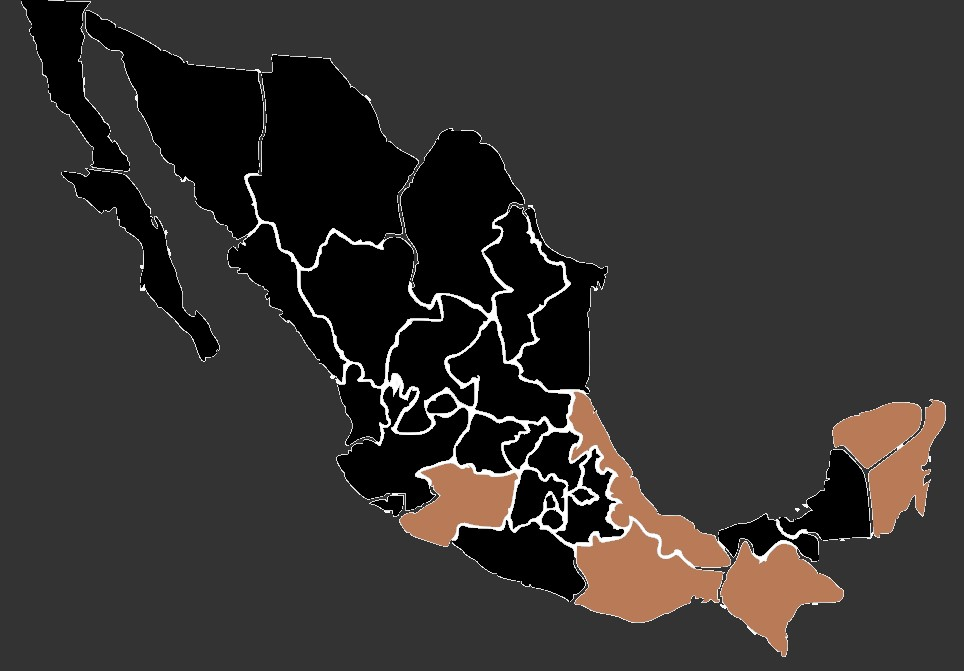

Luciernaga
Familia: Lampyridae
Longevidad: De 3 seamanas de 2 meses
Nombre cientifico: Photinus pyralis
Estado: Amenazada
Familia: Lampyridae
Longevidad: De 3 seamanas de 2 meses
Nombre cientifico: Photinus pyralis
Estado: Amenazada
